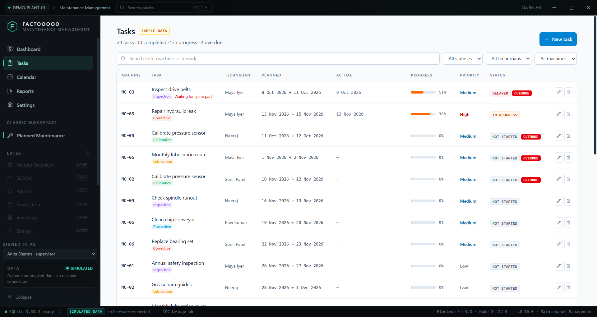
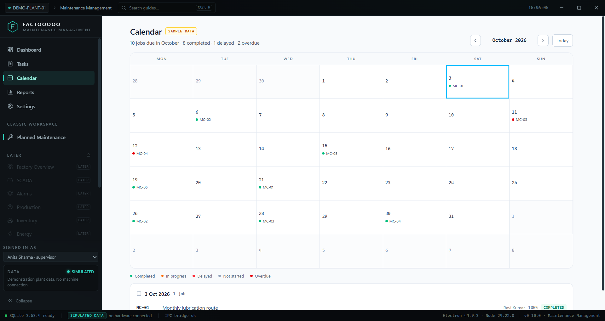
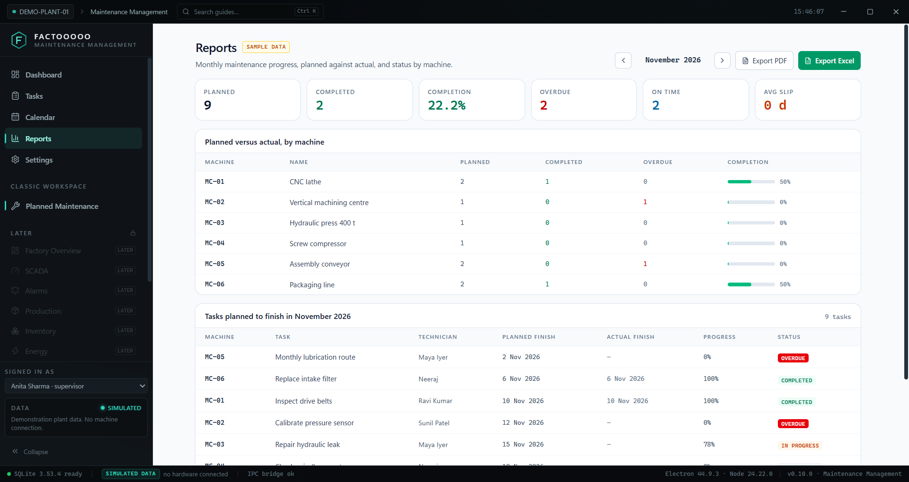

FACTOOOOO
Maintenance Management
Preview · v0.14.0
Every job, every machine,
on one screen.
A Windows application for planning and tracking factory maintenance: assigned tasks with planned and actual dates, a month calendar, and monthly reports as PDF or Excel. It runs on your own computer, needs no internet, and asks for no account.

Dashboard — real build, sample plant data



Portable — recommended
One file. Double-click to run. Nothing installed, no admin rights, no shortcuts left behind.
Download for Windows 11 · 98 MBSHA-256
ade0131d26422fe4094471c9e4c433f68f84115b6a5a9d83b75021a4794fd952
ade0131d26422fe4094471c9e4c433f68f84115b6a5a9d83b75021a4794fd952
One-click installer
Installs for your user, launches itself, adds a desktop shortcut. Starts faster afterwards.
Download installer · 108 MBSHA-256
ed0afd62f8c1eb8d19ccaf6f4b4df29d904bea30258f091c9b1f36522f1031ec
ed0afd62f8c1eb8d19ccaf6f4b4df29d904bea30258f091c9b1f36522f1031ec
Working in this build
- Dashboard — total, completed, in progress, pending, overdue, completion %
- Tasks — create, edit, delete; planned and actual dates, priority, progress, remarks
- Calendar — month view, colour-coded, click a day to see its jobs
- Reports — monthly progress, planned vs actual, machine-wise status
- Export to Excel (three tabs) and PDF
- Settings — your machines, technicians, supervisors and categories
- Two roles: supervisor sees everything, technician sees their own work
- Delay reasons, overdue worked out automatically, progress percentages
- Spare parts per task — deducted from stock once, on completion
- Photo per job, kept inside the app's own data
- Printable work order — one A4 sheet with a signature line
- Ctrl+K search — a tag, a person, or "what is overdue", answered from your own rows
- Machine record — every job, the average slip, the parts consumed
- Light and dark mode — plus accent colour and row spacing, saved with your data
- Backup and restore to any folder you choose
- Local SQLite database, nothing leaves your PC
Deliberately not here yet
- A mobile or tablet app
- Live machine connections (SCADA, OPC UA, PLCs)
- Cloud sync or any online account
- Code signing — Windows will warn on first run
- Languages other than English
- Any connection to real machinery — data is simulated
Windows will warn you. This build is unsigned, so SmartScreen shows "Windows protected your PC". Click More info → Run anyway. The SHA-256 above lets you confirm the file is unmodified.